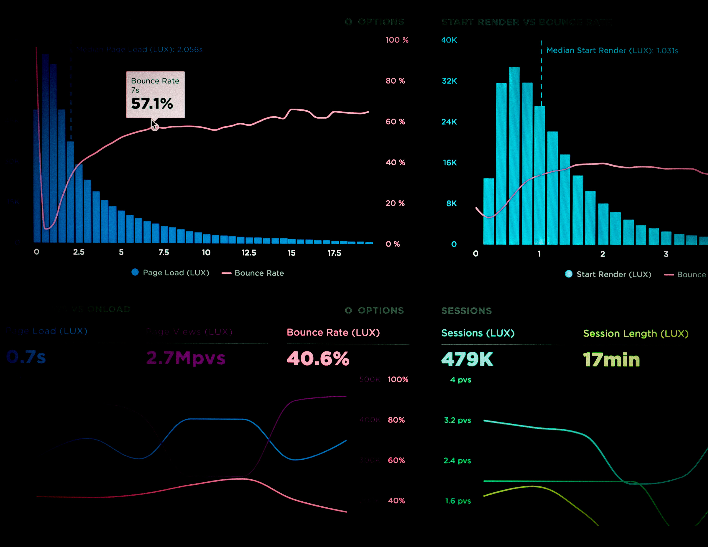

Artificial
Intelligence
Artificial intelligence (AI) is wide-ranging branch
of computer science concerned with building smart machines
capable of performing tasks that typically require human intelligence.
Web Application
Development
Web application development is the creation of application programs that reside on remote servers and are delivered to the user’s device over the Internet. A web application (web app) does not need to be downloaded and is instead accessed through a network.
Game
Designing
Game design is an exciting, rewarding and multi-faceted
field with promising job prospects. However, becoming
a game designer can be a challenging journey.
Passion, patience, and persistence are essential!
Cyber
Security
Cyber security refers to the body of technologies, processes, and practices designed to protect networks, devices, programs, and data from attack, damage, or unauthorized access. Cyber security may also be referred to as information technology security.
Data
Analytics
Data analytics is the science of analyzing raw data in order to make conclusions about that information. Many of the techniques and processes of data analytics have been automated into mechanical processes and algorithmsthat work over raw data for human consumption.
